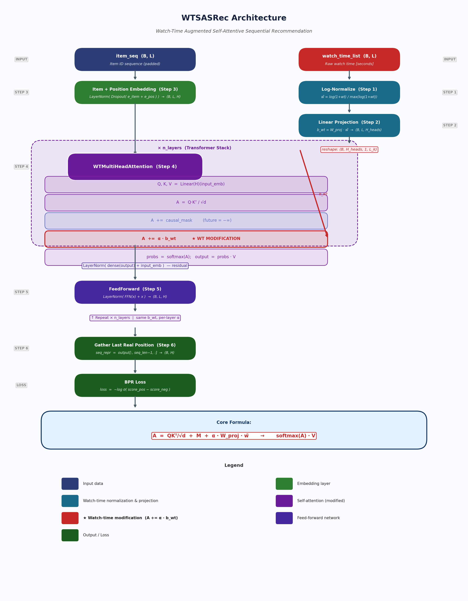

Thesis Component: Watch Time as Attention Score Modifier
2026
Thesis contribution: “Introduce watch time as a weighting or gating mechanism into a baseline model — items watched longer get higher influence on the next prediction.”
Core mechanism: Sửa đổi Attention Score (Attention Score Modification)
WTSASRec mở rộng SASRec bằng cách thêm một bias phụ thuộc vào watch time vào attention score trước khi tính softmax. Điều này khiến mỗi query tự nhiên chú ý nhiều hơn đến các item mà người dùng đã xem lâu hơn trong lịch sử.
Standard SASRec:
WTSASRec thêm một số hạng watch-time bias:
trong đó là learnable scalar parameter (khởi tạo = 1.0), cho phép model tự học mức độ ảnh hưởng của watch time. là causal mask (upper-triangular ). là watch-time bias vector.
Raw watch time (giây) được chuẩn hoá theo từng sequence:
Bước 1 — Log transform (giảm ảnh hưởng outlier):
Bước 2 — Per-sequence max normalization (đưa về ):
trong đó tránh chia cho 0. Kết quả: .
Scalar normalized watch time được chiếu thành bias riêng cho từng attention head:
trong đó là linear projection learnable — mỗi attention head học một hệ số riêng cho watch-time signal.
Reshape để broadcast lên attention matrix:
Shape sẽ tự động broadcast lên — nghĩa là mọi query đều nhận cùng watch-time bias cho mỗi key.
Input:
item_seq : (B, L) — item ID sequence (padded)
watch_time_list : (B, L) — raw watch time in seconds
STEP 1 — Normalize watch time [WTSASRec]
wt_norm = log(1+wt) / (max(log(1+wt)) + eps) → (B,L) in [0,1]
STEP 2 — Project to per-head bias [WTSASRec]
wt_bias = Linear(1 → H_heads)(wt_norm) → (B, L, H_heads)
STEP 3 — Item + Position Embedding [WTSASRec.forward]
item_emb = ItemEmbedding(item_seq) → (B, L, H)
pos_emb = PositionEmbedding(0..L-1) → (B, L, H)
input_emb = LayerNorm(Dropout(item+pos)) → (B, L, H)
STEP 4 — Watch-Time Augmented Attention [WTMultiHeadAttention]
Q = W_Q * input_emb → (B, H_heads, L, d) d = H/H_heads
K = W_K * input_emb → (B, H_heads, d, L) [transposed]
V = W_V * input_emb → (B, H_heads, L, d)
A = Q*K / sqrt(d) → (B, H_heads, L, L) raw scores
A += causal_mask → broadcast (B,1,1,L) future=-inf
A += alpha * wt_bias_t → broadcast (B,H,1,L) *** WT MODIFICATION
probs = softmax(A) → (B, H_heads, L, L)
context = probs * V → (B, H_heads, L, d)
output = LayerNorm(dense(context) + input_emb) residual
STEP 5 — FeedForward + Stack [WTTransformerEncoder]
output = FFN(attention_output) → (B, L, H)
[repeat x n_layers, same wt_bias for all layers]
STEP 6 — Prediction + BPR Loss [WTSASRec]
seq_repr = output[:, seq_len-1, :] → (B, H)
loss = BPR(seq_repr * emb_pos, seq_repr * emb_neg)
| Tham số | Shape | Thuộc về | Vai trò |
|---|---|---|---|
wt_proj.weight |
WTSASRec |
Project per-head bias | |
wt_proj.bias |
WTSASRec |
Bias cho projection | |
wt_alpha (per layer) |
scalar | WTMultiHeadAttention |
Scale watch-time bias |
Ví dụ với :
| Tham số | Số lượng |
|---|---|
wt_proj.weight |
2 |
wt_proj.bias |
2 |
wt_alpha × 2 layers |
2 |
| Tổng cộng | 6 tham số bổ sung |
Trên nền SASRec với ~200k tham số, đây là sự bổ sung cực kỳ nhỏ (~0.003%).
| SASRec | WTSASRec | |
|---|---|---|
| Input | (không đổi) | |
| Attention score | ||
| Watch-time signal | Không dùng | Dùng để bias attention |
| Số tham số thêm | 0 | 6 (với 2 layers, 2 heads) |
| Backward compatible | — | Nếu → giống SASRec |
Modification chỉ xảy ra tại 1 dòng trong code:
# WTMultiHeadAttention.forward()
attention_scores = attention_scores + self.wt_alpha * wt_bias_t| Điểm kiểm tra | Kết quả |
|---|---|
| Bias thêm vào trước softmax | Đúng vị trí |
| Shape broadcast lên | .permute(0,2,1).unsqueeze(2) |
| Causal mask áp dụng trước watch-time bias | Thứ tự: mask → bias → softmax |
| Log-normalize per-sequence | |
| learnable | nn.Parameter(torch.ones(1)) |
| Fallback khi không có watch time | if wt_bias is not None |
Dead code đã được xóa:
WTMultiHeadAttention.__init__ trước đây định nghĩa
self.wt_proj = Linear(1, n_heads) nhưng không bao giờ được
gọi — bias được tính bởi WTSASRec._compute_wt_bias(). Tham
số thừa này đã được xóa.
Shared projection across layers:
được tính một lần trong WTSASRec.forward()
rồi truyền cho tất cả transformer layers. Mỗi layer có
riêng để scale, nhưng dùng chung
.
Đây là lựa chọn thiết kế đơn giản — có thể nâng cấp thành per-layer
projection nếu muốn biểu đạt cao hơn.
Sample: 2000 users, 3 epochs
| Model | Recall@10 | NDCG@10 | MRR@10 |
|---|---|---|---|
| SASRec | 0.6975 | 0.5057 | 0.4432 |
| WTSASRec | 0.7170 | 0.5274 | 0.4657 |
| Cải thiện | +2.8% | +4.3% | +5.1% |
WTSASRec triển khai đúng khái niệm Sửa đổi Attention Score: